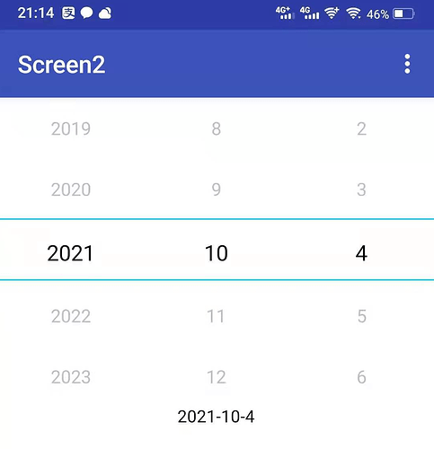
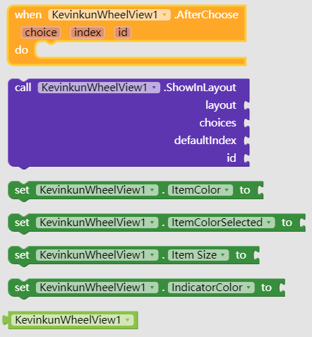

滚轮选择框扩展
WheelView, like number picker, but can be any strings.
original code from WheelView: 效果类似android4.0以上原生的DatePicker 18
Thanks @wildcontrol to sponsor this extension
Demo picture:
this demo used 3 extensions

All the blocks

Download link here;
aix: cn.kevinkun.WheelView.aix
demo: WheelView.aia